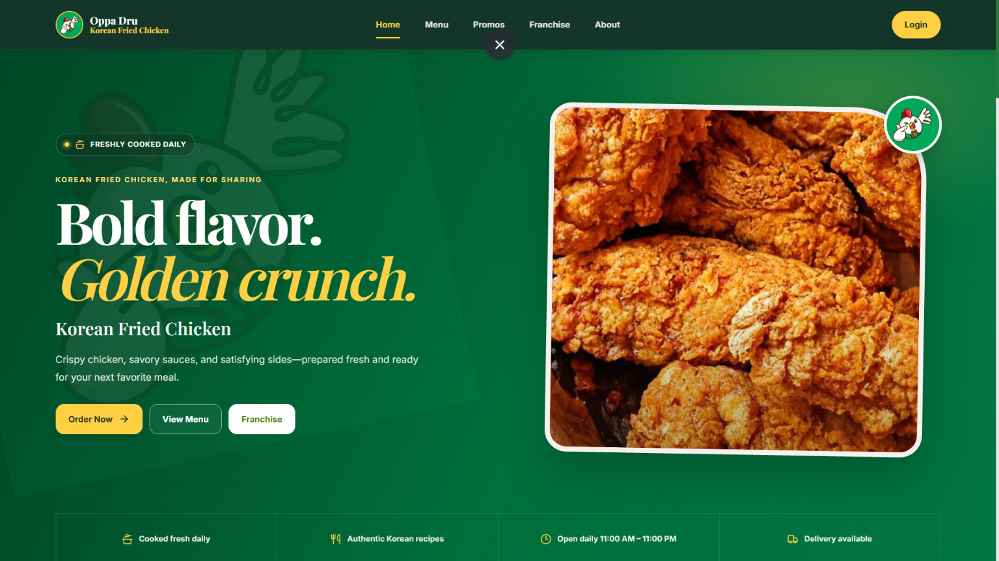

01 / CAPSTONEOppaDru System
A full-stack, multi-branch restaurant ordering and operations management system built with my capstone team. It unifies customer ordering and day-to-day restaurant workflows in one platform, with role-based access for different operational teams.
- My role
- Full-Stack Developer
- Team
- 3 developers
Key features
- Role-based portals for Customer Ordering, Cashier POS, Kitchen Display, Driver Delivery, Admin Operations, and Franchise Management.
- PayMongo payment gateway integration for automated GCash transactions.
- Automated email verification for user accounts.
- Leaflet and OpenStreetMap integration for delivery routing and branch boundary calculations.
My core contributions (Admin & Backoffice Suite):
- Admin sales analytics and client-side PDF/CSV export engine.
- Sales target and profit goal monitoring system.
- Facebook Graph API automated social media posting.
- Product catalog, addon, and branch menu inventory management.
Technical stack
ReactTypeScriptVite
Tailwind CSSLaravelPHP
Supabase (PostgreSQL)PayMongoLeafletFacebook Graph APIRender